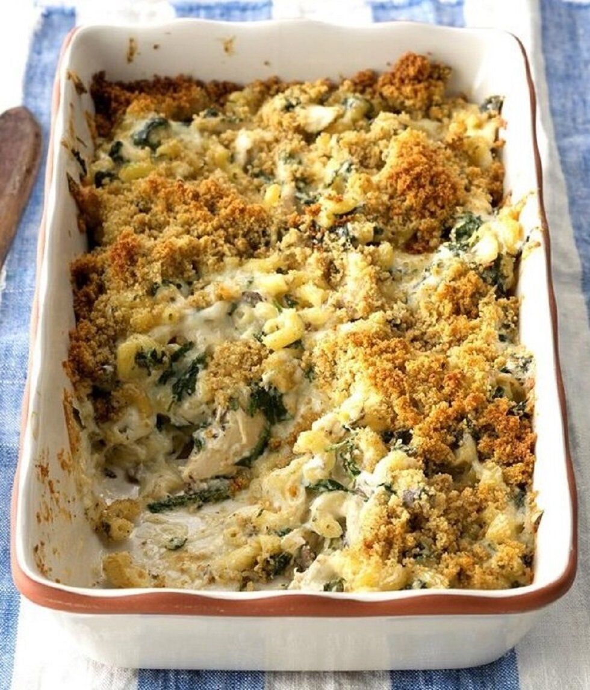

Creamy Chicken Florentine Pasta

Creamy and comforting, this creamy chicken Florentine pasta
is sure to be a hit at dinnertime. The toasty bread crumb
topping delivers a bit of a crunch. You can easily feed more
by increasing your pasta.
Servings: 8 Servings
Prep: 20 minutes
Cook: 55 minutes
Ingredients
- 2 cups uncooked elbow macaroni
- 3 cups shredded cooked chicken
- 1 cup shredded Swiss cheese
- 1 cup shredded mozzarella cheese
- ½ cup mayonnaise
- ¼ cup minced fresh basil
- 1 small onion, diced
- 16 ounces baby spinach
- 1 (10.5 ounce) can condensed cream of mushroom soup
- 1 teaspoon garlic powder
- ½ teaspoon dried thyme
- ½ teaspoon ground black pepper
- ½ cup seasoned bread crumbs
- 2 tablespoons butter, melted
Directions
- Preheat the oven to 350 degrees F (175 degrees C).
- Bring a large pot of lightly salted water to a boil.
Cook elbow macaroni in the boiling water, stirring
occasionally, until tender yet firm to the bite, about 8 minutes.
- While the macaroni is cooking, combine chicken, Swiss and mozzarella
cheeses, mayonnaise, basil, and onion in a bowl. Add spinach,
condensed soup, garlic powder, thyme, and pepper; mix to combine.
- Drain macaroni. Gently stir into the chicken mixture. Transfer to an
ungreased 9x13-inch baking dish.
- Toss bread crumbs with melted butter; sprinkle over the casserole.
- Bake, uncovered, in the preheated oven until bubbly, 40 to 45 minutes.
return to Main Page